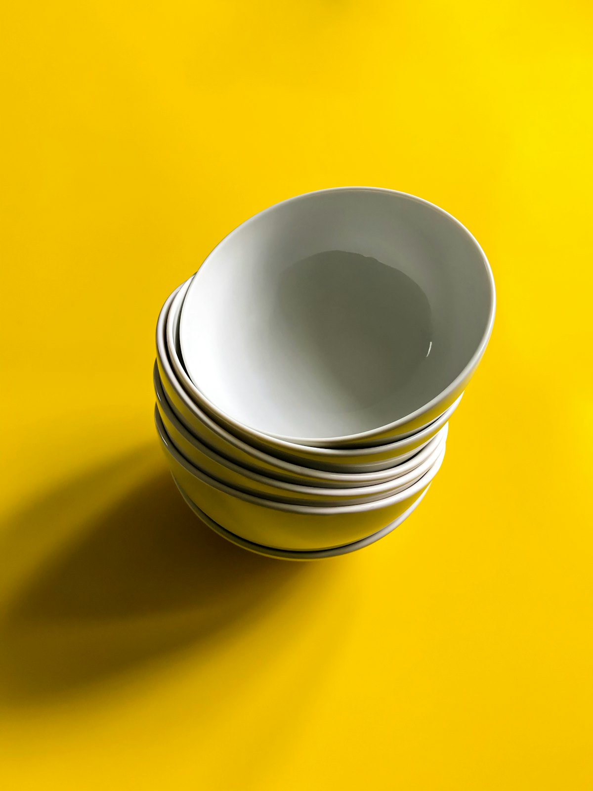
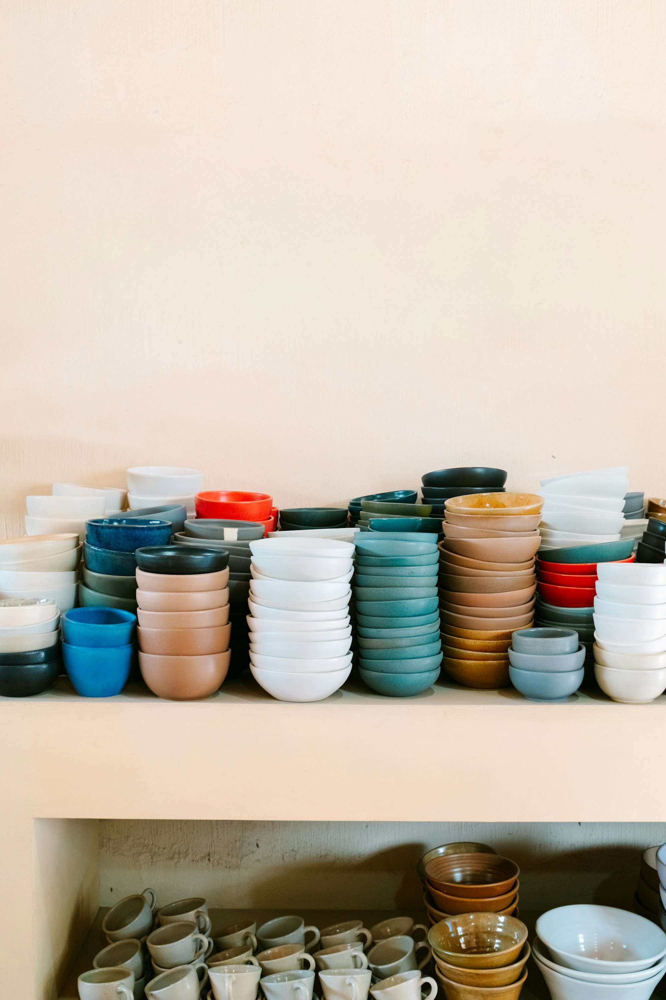
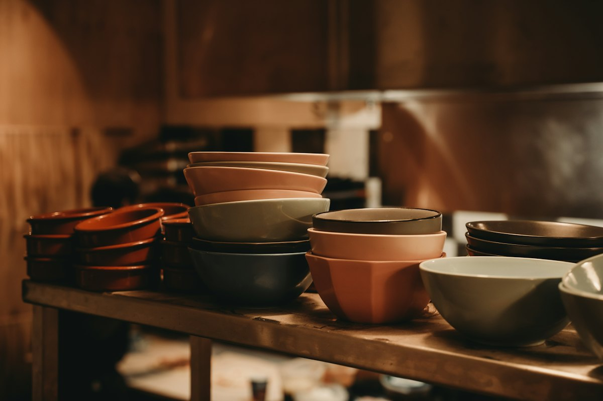
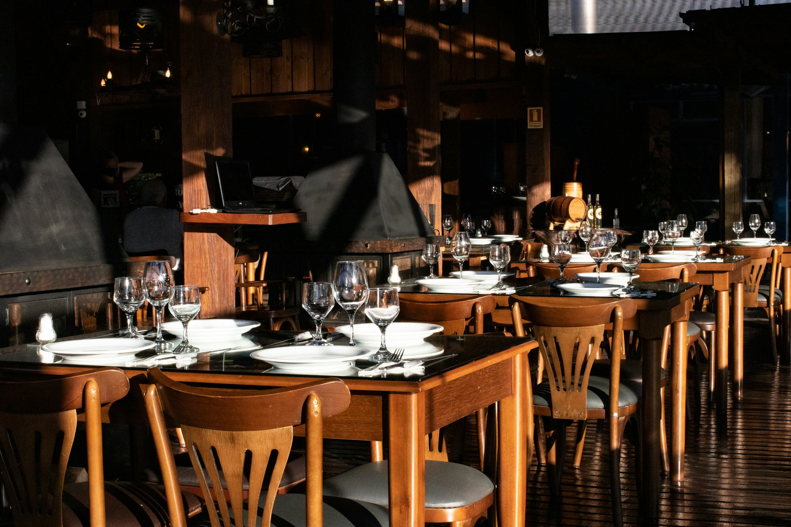

病院・介護福祉施設
毎日の食事を支える、扱いやすい器。

業務用食器 東京都港区新橋
ヤマト化工が製造するスリーラインメラミンウェアの総販売元。病院や福祉施設、社員食堂、学校給食、ホテルまで、器から課題を解決します。
器を起点に
病院
毎日の食事を支える器を、トレーごとご提案します。
3Dのイメージです。実際の商品とは異なります
スリーラインは、多彩な商品を取りそろえ、お客様の「食」の現場に関わる問題に取り組む、提案解決型の食器販売会社です。
メラミン食器を中心に、強化磁器食器、FRP素材をはじめとした各種トレイ、漆器、ホテルウェアなども取りそろえています。

毎日の食事を支える、扱いやすい器。
たくさん使う現場に合わせたラインナップ。

子どもたちの食事に寄り添う器を。

| お問い合わせ | お電話・メールで承ります |
|---|
商品のご相談やカタログのご請求は、お電話かメールでどうぞ。